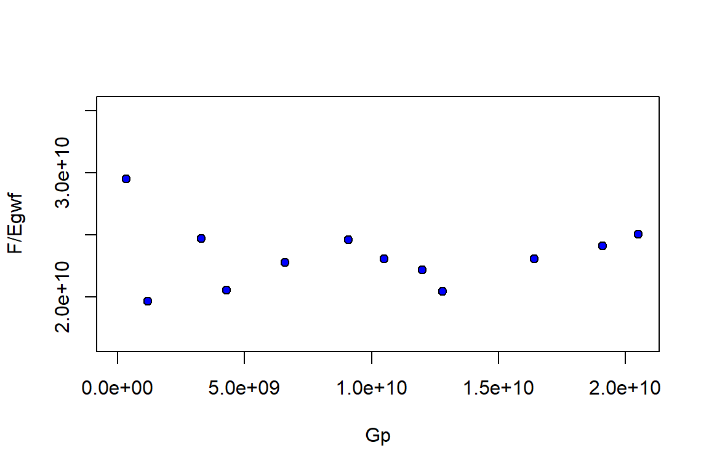
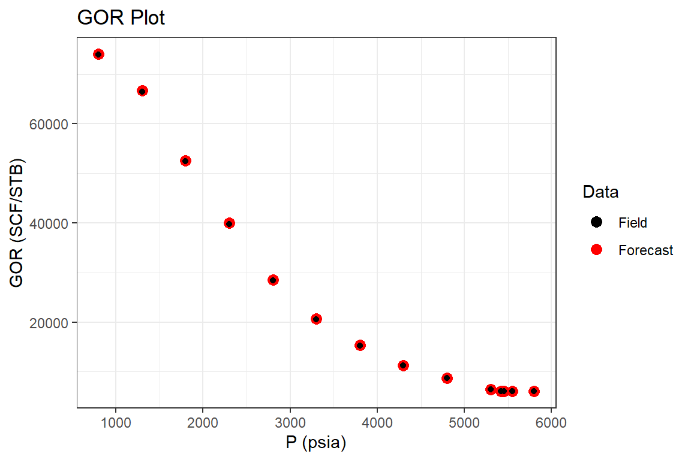

GasCondensate.RmdExamples
Example 1: Lean Gas Condensate Reservoir (Walsh & Lake, 2003)
Part I: History Match
library(Rmbal) library(Rrelperm) library(pracma) library(minpack.lm) library(ggplot2) library(dplyr) #> #> Attaching package: 'dplyr' #> The following objects are masked from 'package:stats': #> #> filter, lag #> The following objects are masked from 'package:base': #> #> intersect, setdiff, setequal, union library(magrittr) #> #> Attaching package: 'magrittr' #> The following objects are masked from 'package:pracma': #> #> and, mod, or p_pvt <- c(3700, 3650, 3400, 3100, 2800, 2500, 2200, 1900, 1600, 1300, 1000, 700, 600, 400) Bo <- c(10.057, 2.417, 2.192, 1.916, 1.736, 1.617, 1.504, 1.416, 1.326, 1.268, 1.205, 1.149, 1.131, 1.093) Rv <- c(84.11765, 84.11765, 70.5, 56.2, 46.5, 39.5, 33.8, 29.9, 27.3, 25.5, 25.9, 28.3, 29.8, 33.5) / 1e6 Rs <- c(11566, 2378, 2010, 1569, 1272, 1067, 873, 719, 565, 461, 349, 249, 218, 141) Bg <- c(0.87, 0.88, 0.92, 0.99, 1.08, 1.20, 1.35, 1.56, 1.85, 2.28, 2.95, 4.09, 4.68, 6.53) / 1000 cw <- 3e-6 Bwi <- 10.05 Bw <- Bwi * exp(cw * (p_pvt[1] - p_pvt)) muo <- c(0.0612, 0.062, 0.1338, 0.1826, 0.2354, 0.3001, 0.3764, 0.4781, 0.6041, 0.7746, 1.0295, 1.358, 1.855, 2.500) mug <- c(0.0612, 0.062, 0.0554, 0.0436, 0.0368, 0.0308, 0.0261, 0.0222, 0.0191, 0.0166, 0.0148, 0.0135, 0.0125, 0.0115) muw <- rep(0.25, length(p_pvt)) pvt_table <- data.frame(p = p_pvt, Bo = Bo, Rs = Rs, Rv = Rv, Bg = Bg, Bw = Bw, muo = muo, mug = mug, muw = muw) p <- c(3700, 3650, 3400, 3100, 2800, 2500, 2200, 1900, 1600, 1300, 1000, 700, 600) We <- rep(0, length.out = length(p)) Np <- c(0, 28.6, 93, 231, 270, 379, 481, 517.2, 549, 580, 675, 755, 803) *1e3 Gp <- c(0, 0.34, 1.2, 3.3, 4.3, 6.6, 9.1, 10.5, 12, 12.8, 16.4, 19.1, 20.5) * 1e9 Wp <- rep(0, length.out = length(p)) Wi <- rep(0, length.out = length(p)) wf <- rep(1, length.out = length(p)) mbal_optim_gas_lst <- mbal_optim_param_gas(input_unit = "Field", output_unit = "Field", unknown_param = "G", aquifer_model = NULL, phi = 0.1, swi = 0.2, Np = Np, Gp = Gp, Wp = Wp, Wi = Wi, We = We, pd = 3650, p = p, pvt = pvt_table, M = 0, cf = 2e-6, wf = wf, sgrw = 0.15) time_lst <- mbal_time(c(1:length(p)), "year") # a number of plots will be automatically generated for quality check optim_results <- mbal_optim_gas(mbal_optim_gas_lst, time_lst)

glimpse(optim_results) #> List of 17 #> $ input_unit : chr "Field" #> $ output_unit: chr "Field" #> $ G : num 2.41e+10 #> $ phi : num 0.1 #> $ swi : num 0.2 #> $ pd : num 3650 #> $ p : num [1:13] 3700 3650 3400 3100 2800 2500 2200 1900 1600 1300 ... #> $ cf : num [1:13] 2e-06 2e-06 2e-06 2e-06 2e-06 2e-06 2e-06 2e-06 2e-06 2e-06 ... #> $ M : num 0 #> $ pvt :'data.frame': 14 obs. of 9 variables: #> ..$ p : num [1:14] 3700 3650 3400 3100 2800 2500 2200 1900 1600 1300 ... #> ..$ Bo : num [1:14] 10.06 2.42 2.19 1.92 1.74 ... #> ..$ Rs : num [1:14] 11566 2378 2010 1569 1272 ... #> ..$ Rv : num [1:14] 8.41e-05 8.41e-05 7.05e-05 5.62e-05 4.65e-05 ... #> ..$ Bg : num [1:14] 0.00087 0.00088 0.00092 0.00099 0.00108 0.0012 0.00135 0.00156 0.00185 0.00228 ... #> ..$ Bw : num [1:14] 10.1 10.1 10.1 10.1 10.1 ... #> ..$ muo: num [1:14] 0.0612 0.062 0.1338 0.1826 0.2354 ... #> ..$ mug: num [1:14] 0.0612 0.062 0.0554 0.0436 0.0368 0.0308 0.0261 0.0222 0.0191 0.0166 ... #> ..$ muw: num [1:14] 0.25 0.25 0.25 0.25 0.25 0.25 0.25 0.25 0.25 0.25 ... #> $ prod :'data.frame': 13 obs. of 3 variables: #> ..$ Np: num [1:13] 0 28600 93000 231000 270000 ... #> ..$ Gp: num [1:13] 0.0 3.4e+08 1.2e+09 3.3e+09 4.3e+09 ... #> ..$ Wp: num [1:13] 0 0 0 0 0 0 0 0 0 0 ... #> $ inj :'data.frame': 13 obs. of 1 variable: #> ..$ Wi: num [1:13] 0 0 0 0 0 0 0 0 0 0 ... #> $ We : num [1:13] 0 0 0 0 0 0 0 0 0 0 ... #> $ aquifer :List of 3 #> ..$ input_unit : chr "Field" #> ..$ output_unit: chr "Field" #> ..$ We : num [1:13] 0 0 0 0 0 0 0 0 0 0 ... #> ..- attr(*, "class")= chr [1:2] "NoA" "aquifer" #> $ wf : num [1:13] 1 1 1 1 1 1 1 1 1 1 ... #> $ sgrw : num 0.15 #> $ p_est : num [1:13] 3700 3638 3459 3087 2928 ... #> - attr(*, "class")= chr [1:2] "volumetric_gas" "mbal_gas"
Part II: Reservoir Performance
mbal_results <- mbal_perform_gas(optim_results, time_lst) mbal_results #> P (psia) Eo (bbl/STB) Eg (bbl/SCF) Ew (bbl/STB) Ef (bbl/bbl) Egwf (bbl/SCF) #> 1 3700 0.0000000 0.000000e+00 0.000000000 0.0000 0.000000e+00 #> 2 3650 0.1320662 1.000000e-05 0.001507613 0.0001 1.014138e-05 #> 3 3400 0.6574474 5.543884e-05 0.009049071 0.0006 5.628718e-05 #> 4 3100 1.5325537 1.311046e-04 0.018106291 0.0012 1.328015e-04 #> 5 2800 2.6122256 2.244833e-04 0.027171665 0.0018 2.270288e-04 #> 6 2500 4.0130663 3.456791e-04 0.036245202 0.0024 3.490735e-04 #> 7 2200 5.7613484 4.968738e-04 0.045326909 0.0030 5.011172e-04 #> 8 1900 8.1827541 7.063101e-04 0.054416793 0.0036 7.114028e-04 #> 9 1600 11.5352122 9.962015e-04 0.063514862 0.0042 1.002144e-03 #> 10 1300 16.4682424 1.422867e-03 0.072621122 0.0048 1.429658e-03 #> 11 1000 24.1867133 2.090307e-03 0.081735582 0.0054 2.097949e-03 #> 12 700 37.3364090 3.227341e-03 0.090858249 0.0060 3.235832e-03 #> 13 600 44.1449393 3.816056e-03 0.093900963 0.0062 3.824830e-03 #> Et (bbl) F (bbl) We Igd Inwd Ifwd Iawd Itot RF_oil #> 1 0.0 0 0 NA NA NA NA NA 0.00000000 #> 2 244546.5 299200 0 0.9860593 0 0.013940655 0 1 0.01152429 #> 3 1357294.1 1107355 0 0.9849284 0 0.015071605 0 1 0.05619769 #> 4 3202339.9 3285114 0 0.9872226 0 0.012777361 0 1 0.11101389 #> 5 5474512.8 4670970 0 0.9887876 0 0.011212425 0 1 0.15600931 #> 6 8417466.8 7961572 0 0.9902759 0 0.009724057 0 1 0.19754688 #> 7 12083808.4 12343156 0 0.9915320 0 0.008467990 0 1 0.23215128 #> 8 17154579.3 16441143 0 0.9928414 0 0.007158640 0 1 0.26604491 #> 9 24165423.8 22263132 0 0.9940706 0 0.005929366 0 1 0.29378450 #> 10 34474400.5 29239665 0 0.9952495 0 0.004750542 0 1 0.33713256 #> 11 50589383.5 48424305 0 0.9963577 0 0.003642322 0 1 0.34765473 #> 12 78028003.4 78147206 0 0.9973758 0 0.002624158 0 1 0.37164849 #> 13 92230944.2 95961416 0 0.9977059 0 0.002294137 0 1 0.38049060 #> RF_gas SOg SGg SWg SOT SGT SWT qo (STB/day) #> 1 0.00000000 0.00000000 0.8000000 0.2 0.00000000 0.8000000 0.2 0.00000 #> 2 0.01152429 0.00000000 0.8000000 0.2 0.00000000 0.8000000 0.2 78.35616 #> 3 0.06099636 0.03081968 0.7691803 0.2 0.03081968 0.7691803 0.2 176.43836 #> 4 0.13340325 0.05019541 0.7498046 0.2 0.05019541 0.7498046 0.2 378.08219 #> 5 0.20899811 0.05785919 0.7421408 0.2 0.05785919 0.7421408 0.2 106.84932 #> 6 0.28937568 0.06103382 0.7389662 0.2 0.06103382 0.7389662 0.2 298.63014 #> 7 0.36944903 0.06151868 0.7384813 0.2 0.06151868 0.7384813 0.2 279.45205 #> 8 0.45433152 0.06031277 0.7396872 0.2 0.06031277 0.7396872 0.2 99.17808 #> 9 0.54016310 0.05791260 0.7420874 0.2 0.05791260 0.7420874 0.2 87.12329 #> 10 0.62584935 0.05444033 0.7455597 0.2 0.05444033 0.7455597 0.2 84.93151 #> 11 0.71051843 0.05289869 0.7471013 0.2 0.05289869 0.7471013 0.2 260.27397 #> 12 0.79087148 0.04988085 0.7501191 0.2 0.04988085 0.7501191 0.2 219.17808 #> 13 0.81708903 0.04878615 0.7512138 0.2 0.04878615 0.7512138 0.2 131.50685 #> qg (SCF/day) qw (STB/day) fo fw GOR (SCF/STB) kro/krg #> 1 0.0 0 0.000000000 0 11888.11 0 #> 2 931506.8 0 0.000000000 0 11888.11 0 #> 3 2356164.4 0 0.022742723 0 13354.04 0 #> 4 5753424.7 0 0.033095319 0 15217.39 0 #> 5 2739726.0 0 0.037904222 0 25641.03 0 #> 6 6301369.9 0 0.027491083 0 21100.92 0 #> 7 6849315.1 0 0.023974224 0 24509.80 0 #> 8 3835616.4 0 0.018973378 0 38674.03 0 #> 9 4109589.0 0 0.008598187 0 47169.81 0 #> 10 2191780.8 0 0.021894547 0 25806.45 0 #> 11 9863013.7 0 0.000000000 0 37894.74 0 #> 12 7397260.3 0 0.000000000 0 33750.00 0 #> 13 3835616.4 0 0.000000000 0 29166.67 0
Part III: Reservoir Forecast
# Step I: generating a set of pseudo relative permeability curves using # laboratory 'Kr' values sg_lab <- c(0.05, 0.152, 0.248, 0.352, 0.448, 0.552, 0.65) krg_lab <- c(0, 0.05, 0.09, 0.18, 0.3, 0.5, 1) kro_lab <- c(1, 0.6, 0.35, 0.13, 0.04, 0.01, 0) swcrit_lab <- 0.2 sgcrit_lab <- 0.05 sorgr_lab <- 0.15 fun_kr <- function(x, swcrit, sgcrit, sorg, sg, krg, kro) { kr_est <- Rrelperm::kr2p_gl(SWCON = swcrit, SOIRG = sorg, SORG = sorg, SGCON = sgcrit, SGCRIT = sgcrit, KRGCL = 1, KROGCG = 1, NG = x[1], NOG = x[2], NP = 101) krg_est_sub <- approx(x = kr_est[,1], y = kr_est[,3], xout = sg, rule = 2)$y kro_est_sub <- approx(x = kr_est[,1], y = kr_est[,4], xout = sg, rule = 2)$y error <- (krg - krg_est_sub) ^ 2 + (kro - kro_est_sub) ^ 2 return(error) } par <- c(2, 2) opt_results <- minpack.lm::nls.lm(par = par, fn = fun_kr, swcrit = swcrit_lab, sgcrit = sgcrit_lab, sorg = sorgr_lab, sg = sg_lab, krg = krg_lab, kro = kro_lab, lower = c(0.1,0.1), upper = c(10,10)) sol <- opt_results$par sol #> [1] 3.157478 2.740570 rel_perm <- as.data.frame(Rrelperm::kr2p_gl(SWCON = swcrit_lab, SOIRG = sorgr_lab, SORG = sorgr_lab, SGCON = sgcrit_lab, SGCRIT = sgcrit_lab, KRGCL = 1, KROGCG = 1, NG = sol[1], NOG = sol[2], NP = 101)) colnames(rel_perm) <- c("Sg", "Sl", "Krg", "Krog") p_forecast <- p wf_forecast <- wf time_lst_forecast <- mbal_time(c(1:length(p_forecast)), "year") forecast_lst <- mbal_forecast_param_gas(input_unit = "Field", output_unit = "Field", G = 2.41e10, phi = 0.1, swi = 0.2, pd = 3650, p = p_forecast, pvt = pvt_table, M = 0, cf = 2e-6, wf = wf_forecast, rel_perm = rel_perm) glimpse(forecast_lst) #> List of 12 #> $ input_unit : chr "Field" #> $ output_unit: chr "Field" #> $ G : num 2.41e+10 #> $ phi : num 0.1 #> $ swi : num 0.2 #> $ pd : num 3650 #> $ p : num [1:13] 3700 3650 3400 3100 2800 2500 2200 1900 1600 1300 ... #> $ cf : num [1:13] 2e-06 2e-06 2e-06 2e-06 2e-06 2e-06 2e-06 2e-06 2e-06 2e-06 ... #> $ M : num 0 #> $ pvt :'data.frame': 14 obs. of 9 variables: #> ..$ p : num [1:14] 3700 3650 3400 3100 2800 2500 2200 1900 1600 1300 ... #> ..$ Bo : num [1:14] 10.06 2.42 2.19 1.92 1.74 ... #> ..$ Rs : num [1:14] 11566 2378 2010 1569 1272 ... #> ..$ Rv : num [1:14] 8.41e-05 8.41e-05 7.05e-05 5.62e-05 4.65e-05 ... #> ..$ Bg : num [1:14] 0.00087 0.00088 0.00092 0.00099 0.00108 0.0012 0.00135 0.00156 0.00185 0.00228 ... #> ..$ Bw : num [1:14] 10.1 10.1 10.1 10.1 10.1 ... #> ..$ muo: num [1:14] 0.0612 0.062 0.1338 0.1826 0.2354 ... #> ..$ mug: num [1:14] 0.0612 0.062 0.0554 0.0436 0.0368 0.0308 0.0261 0.0222 0.0191 0.0166 ... #> ..$ muw: num [1:14] 0.25 0.25 0.25 0.25 0.25 0.25 0.25 0.25 0.25 0.25 ... #> $ wf : num [1:13] 1 1 1 1 1 1 1 1 1 1 ... #> $ rel_perm :'data.frame': 101 obs. of 4 variables: #> ..$ Sg : num [1:101] 0 0.01 0.02 0.03 0.04 0.05 0.06 0.07 0.08 0.09 ... #> ..$ Sl : num [1:101] 1 0.99 0.98 0.97 0.96 0.95 0.94 0.93 0.92 0.91 ... #> ..$ Krg : num [1:101] 0 0 0 0 0 ... #> ..$ Krog: num [1:101] 1 1 1 1 1 ... #> - attr(*, "class")= chr [1:2] "volumetric_forecast_gas" "forecast_gas" forecast_results <- mbal_forecast_gas(forecast_lst, time_lst_forecast) forecast_results #> P (psia) SOg SGg SWg SOT SGT SWT GOR (SCF/STB) #> 1 3700 0.00000000 0.8000000 0.2 0.00000000 0.8000000 0.2 11888.11 #> 2 3650 0.00000000 0.8000000 0.2 0.00000000 0.8000000 0.2 11888.11 #> 3 3400 0.03068653 0.7693135 0.2 0.03068653 0.7693135 0.2 14184.40 #> 4 3100 0.05013281 0.7498672 0.2 0.05013281 0.7498672 0.2 17793.59 #> 5 2800 0.05761899 0.7423810 0.2 0.05761899 0.7423810 0.2 21505.38 #> 6 2500 0.06091994 0.7390801 0.2 0.06091994 0.7390801 0.2 25316.46 #> 7 2200 0.06143071 0.7385693 0.2 0.06143071 0.7385693 0.2 29585.80 #> 8 1900 0.06042696 0.7395730 0.2 0.06042696 0.7395730 0.2 33444.82 #> 9 1600 0.05786851 0.7421315 0.2 0.05786851 0.7421315 0.2 36630.04 #> 10 1300 0.05603136 0.7439686 0.2 0.05603136 0.7439686 0.2 39215.69 #> 11 1000 0.05296314 0.7470369 0.2 0.05296314 0.7470369 0.2 38610.04 #> 12 700 0.04977272 0.7502273 0.2 0.04977272 0.7502273 0.2 35335.69 #> 13 600 0.04866108 0.7513389 0.2 0.04866108 0.7513389 0.2 33557.05 #> RF_oil RF_gas Liq_volume Igd Inwd Ifwd Iawd Itot #> 1 0.00000000 0.00000000 0.00000000 NA NA NA NA NA #> 2 0.01152429 0.01152429 0.00000000 0.9860593 0 0.013940655 0 1 #> 3 0.05685112 0.06097174 0.03758014 0.9849284 0 0.015071605 0 1 #> 4 0.11139035 0.13339023 0.05859826 0.9872226 0 0.012777361 0 1 #> 5 0.15766441 0.20894764 0.06341777 0.9887876 0 0.011212425 0 1 #> 6 0.19840889 0.28935420 0.06195818 0.9902759 0 0.009724057 0 1 #> 7 0.23287900 0.36943370 0.05704894 0.9915320 0 0.008467990 0 1 #> 8 0.26503067 0.45434807 0.04977378 0.9928414 0 0.007158640 0 1 #> 9 0.29420592 0.54015762 0.04100334 0.9940706 0 0.005929366 0 1 #> 10 0.32114068 0.62597917 0.03280231 0.9952495 0 0.004750542 0 1 #> 11 0.34697055 0.71052189 0.02391379 0.9963577 0 0.003642322 0 1 #> 12 0.37285555 0.79086821 0.01576379 0.9973758 0 0.002624158 0 1 #> 13 0.38190992 0.81708618 0.01319553 0.9977059 0 0.002294137 0 1 p1 <- forecast_results %>% ggplot(aes(`P (psia)`, SOg, color = "Forecast")) + geom_point(size = 3) + geom_point(data = mbal_results, aes(`P (psia)`, SOg, color = "Field"))+ scale_color_manual(name="Data", values=c("Forecast" = "red", "Field" = "black")) + ggtitle("Condensate Saturation Plot") + theme_bw() p1
p2 <- forecast_results %>% ggplot(aes(`P (psia)`, `GOR (SCF/STB)`, color = "Forecast")) + geom_point(size = 3) + geom_point(data = mbal_results, aes(`P (psia)`, `GOR (SCF/STB)`, color = "Field")) + scale_color_manual(name="Data", values=c("Forecast" = "red", "Field" = "black")) + ggtitle("GOR Plot") + theme_bw() p2
p3 <- forecast_results %>% ggplot(aes(`P (psia)`, `RF_oil`, color = "Forecast")) + geom_point(size = 3) + geom_point(data = mbal_results, aes(`P (psia)`, `RF_oil`, color = "Field")) + scale_color_manual(name="Data", values=c("Forecast" = "red", "Field" = "black")) + ggtitle("Condensate Recovery Plot") + theme_bw() p3
p4 <- forecast_results %>% ggplot(aes(`P (psia)`, `Liq_volume`, color = "Forecast")) + geom_point(size = 3) + scale_color_manual(name="Data", values=c("Forecast" = "red")) + ggtitle("CCE Liquid Volume Plot") + theme_bw() p4
Example 2: Lean Gas Condensate Reservoir (Walsh, Ansah, & Raghavan, 1994)
Part I: Reservoir Forecast
library(Rmbal) library(Rrelperm) library(pracma) library(ggplot2) library(dplyr) library(magrittr) p_pvt <- c(8000, 7500, 7280, 7250, 7000, 6500, 6000, 5500, 5000, 4500, 4000, 3500, 3000, 2500, 2000, 1500, 1000) # psia Bo <- c(12.732, 13.044, 13.192, 1.054, 1.041, 1.018, 1.002, 0.983, 0.965, 0.947, 0.93, 0.913, 0.896, 0.877, 0.858, 0.839, 0.819) # RB/STB Rs <- c(22527, 22527, 22527, 860, 819, 754, 704, 648, 593, 541, 490, 440, 389, 336, 280, 228, 169) #SCF/STB Bg <- c(0.565, 0.579, 0.586, 0.587, 0.595, 0.613, 0.634, 0.661, 0.694, 0.737, 0.795, 0.817, 0.997, 1.178, 1.466, 1.963, 2.912) / 1000 # RB/SCF Rv <- c(44.4, 44.4, 44.4, 44.3, 43.9, 40.3, 36.5, 32.9, 29.2, 25.4, 21.4, 17.6, 13.7, 10.5, 7.9, 5.8, 4.4) / 1e6 # STB/SCF cw <- 2e-6 Bwi <- 1.0 Bw <- Bwi * exp(cw * (p_pvt[1] - p_pvt)) muo <- c(0.049, 0.047, 0.046, 19.541, 20.965, 23.958, 26.338, 29.633, 33.319, 37.401, 42.161, 47.465, 53.765, 61.887, 72.143, 83.478, 99.049) # cp muw <- rep(0.25, length(p_pvt)) mug <- c(0.049, 0.047, 0.046, 0.046, 0.0449, 0.042, 0.0393, 0.0366, 0.0339, 0.0312, 0.0283, 0.0254, 0.0225, 0.0198, 0.0174, 0.0154, 0.014) # cp pvt_table <- data.frame(p = p_pvt, Bo = Bo, Rs = Rs, Rv = Rv, Bg = Bg, Bw = Bw, muo = muo, mug = mug, muw = muw) p <- c(8000, 7500, 7280, 7250, 7000, 6500, 6000, 5500, 5000, 4500, 4000, 3500, 3000, 2500, 2000, 1500, 1000) # psia Gi <- rep(0, length.out = length(p)) wf <- rep(1, length.out = length(p)) # generating a set of pseudo relative permeability curves using # laboratory 'Kr' values sg_lab <- c(0.05, 0.152, 0.248, 0.352, 0.448, 0.552, 0.65) krg_lab <- c(0, 0.05, 0.09, 0.18, 0.3, 0.5, 1) kro_lab <- c(1, 0.6, 0.35, 0.13, 0.04, 0.01, 0) swcrit_lab <- 0.2 sgcrit_lab <- 0.05 sorgr_lab <- 0.15 fun_kr <- function(x, swcrit, sgcrit, sorg, sg, krg, kro) { kr_est <- Rrelperm::kr2p_gl(SWCON = swcrit, SOIRG = sorg, SORG = sorg, SGCON = sgcrit, SGCRIT = sgcrit, KRGCL = 1, KROGCG = 1, NG = x[1], NOG = x[2], NP = 101) krg_est_sub <- approx(x = kr_est[,1], y = kr_est[,3], xout = sg, rule = 2)$y kro_est_sub <- approx(x = kr_est[,1], y = kr_est[,4], xout = sg, rule = 2)$y error <- (krg - krg_est_sub) ^ 2 + (kro - kro_est_sub) ^ 2 return(error) } par <- c(2, 2) opt_results <- minpack.lm::nls.lm(par = par, fn = fun_kr, swcrit = swcrit_lab, sgcrit = sgcrit_lab, sorg = sorgr_lab, sg = sg_lab, krg = krg_lab, kro = kro_lab, lower = c(0.1,0.1), upper = c(10,10)) sol <- opt_results$par sol #> [1] 3.157478 2.740570 rel_perm <- as.data.frame(Rrelperm::kr2p_gl(SWCON = swcrit_lab, SOIRG = sorgr_lab, SORG = sorgr_lab, SGCON = sgcrit_lab, SGCRIT = sgcrit_lab, KRGCL = 1, KROGCG = 1, NG = sol[1], NOG = sol[2], NP = 101)) colnames(rel_perm) <- c("Sg", "Sl", "Krg", "Krog") p_forecast <- p Gi_forecast <- Gi wf_forecast <- wf time_lst_forecast <- mbal_time(c(1:length(p_forecast)), "year") forecast_lst <- mbal_forecast_param_gas(input_unit = "Field", output_unit = "Field", G = 1e6, phi = 0.1, swi = 0.2, pd = 7255, p = p_forecast, pvt = pvt_table, M = 0, cf = 2e-6, wf = wf_forecast, rel_perm = rel_perm) forecast_results <- mbal_forecast_gas(forecast_lst, time_lst_forecast) forecast_results #> P (psia) SOg SGg SWg SOT SGT SWT #> 1 8000 0.000000e+00 0.8000000 0.2 0.000000e+00 0.8000000 0.2 #> 2 7500 0.000000e+00 0.8000000 0.2 0.000000e+00 0.8000000 0.2 #> 3 7280 0.000000e+00 0.8000000 0.2 0.000000e+00 0.8000000 0.2 #> 4 7250 -6.445867e-06 0.8000064 0.2 -6.445867e-06 0.8000064 0.2 #> 5 7000 5.302536e-04 0.7994697 0.2 5.302536e-04 0.7994697 0.2 #> 6 6500 5.429192e-03 0.7945708 0.2 5.429192e-03 0.7945708 0.2 #> 7 6000 1.023873e-02 0.7897613 0.2 1.023873e-02 0.7897613 0.2 #> 8 5500 1.437797e-02 0.7856220 0.2 1.437797e-02 0.7856220 0.2 #> 9 5000 1.826115e-02 0.7817389 0.2 1.826115e-02 0.7817389 0.2 #> 10 4500 2.185398e-02 0.7781460 0.2 2.185398e-02 0.7781460 0.2 #> 11 4000 2.525091e-02 0.7747491 0.2 2.525091e-02 0.7747491 0.2 #> 12 3500 2.809971e-02 0.7719003 0.2 2.809971e-02 0.7719003 0.2 #> 13 3000 3.051476e-02 0.7694852 0.2 3.051476e-02 0.7694852 0.2 #> 14 2500 3.181549e-02 0.7681845 0.2 3.181549e-02 0.7681845 0.2 #> 15 2000 3.238901e-02 0.7676110 0.2 3.238901e-02 0.7676110 0.2 #> 16 1500 3.243476e-02 0.7675652 0.2 3.243476e-02 0.7675652 0.2 #> 17 1000 3.201427e-02 0.7679857 0.2 3.201427e-02 0.7679857 0.2 #> GOR (SCF/STB) RF_oil RF_gas Liq_volume Igd Inwd Ifwd #> 1 22522.52 0.00000000 0.00000000 0.0000000000 NA NA NA #> 2 22522.52 0.02564347 0.02564347 0.0000000000 0.9429152 0 0.057084803 #> 3 22522.52 0.03791902 0.03791902 0.0000000000 0.9450713 0 0.054928735 #> 4 22573.36 0.03973609 0.03973814 0.0001866506 0.9454998 0 0.054500241 #> 5 22779.04 0.05363364 0.05373023 0.0009069775 0.9469934 0 0.053006646 #> 6 24813.90 0.08425990 0.08602965 0.0069953671 0.9519195 0 0.048080480 #> 7 27397.26 0.11423483 0.12068817 0.0127243519 0.9559001 0 0.044099860 #> 8 30395.14 0.14535094 0.16050244 0.0173040403 0.9602905 0 0.039709533 #> 9 34246.58 0.17580192 0.20404587 0.0212457921 0.9643350 0 0.035664961 #> 10 39370.08 0.20634170 0.25371497 0.0244042383 0.9685092 0 0.031490803 #> 11 46728.97 0.23638478 0.31100541 0.0267678152 0.9727908 0 0.027209242 #> 12 56818.18 0.24593832 0.33262872 0.0296404337 0.9722007 0 0.027799347 #> 13 72992.70 0.29008639 0.45412713 0.0273081939 0.9814057 0 0.018594281 #> 14 95238.10 0.31403419 0.53879463 0.0249801618 0.9853905 0 0.014609455 #> 15 126582.28 0.33373997 0.62969713 0.0211731296 0.9890246 0 0.010975366 #> 16 172413.79 0.34899766 0.72324482 0.0163934081 0.9922554 0 0.007744562 #> 17 227272.73 0.35976398 0.81315547 0.0112080103 0.9949920 0 0.005008048 #> Iawd Itot #> 1 NA NA #> 2 0 1 #> 3 0 1 #> 4 0 1 #> 5 0 1 #> 6 0 1 #> 7 0 1 #> 8 0 1 #> 9 0 1 #> 10 0 1 #> 11 0 1 #> 12 0 1 #> 13 0 1 #> 14 0 1 #> 15 0 1 #> 16 0 1 #> 17 0 1 reservoir_performance_table <- data.frame(p = p) reservoir_performance_table$`RF_oil` <- c(0, 2.4, 3.5, 4.2, 5.8, 7.6, 10.4, 13.8, 16.6, 20, 23.1, 25.9, 28.5, 30.8, 32.7, 34.1, 35.2) / 100 reservoir_performance_table$`Sg` <- c(100, 100, 100, 99.99, 99.91, 99.29, 98.68, 98.15, 97.66, 97.21, 96.79, 96.45, 96.15, 95.99, 95.9, 95.9, 95.95) * 0.8 / 100 reservoir_performance_table$`GOR` <- c(22.53, 22.53, 22.53, 22.55, 22.78, 24.81, 27.4, 30.4, 34.25, 39.37, 46.73, 56.82, 72.99, 95.24, 126.58, 172.41, 227.27) * 1000 # SCF/STB p1 <- forecast_results %>% ggplot(aes(`P (psia)`, SGg, color = "Forecast")) + geom_point(size = 3) + geom_point(data = reservoir_performance_table, aes(`p`, Sg, color = "Field"))+ scale_color_manual(name="Data", values=c("Forecast" = "red", "Field" = "black")) + ggtitle("Gas Saturation Plot") + theme_bw() p1
p2 <- forecast_results %>% ggplot(aes(`P (psia)`, `GOR (SCF/STB)`, color = "Forecast")) + geom_point(size = 3) + geom_point(data = reservoir_performance_table, aes(`p`, GOR, color = "Field"))+ scale_color_manual(name="Data", values=c("Forecast" = "red", "Field" = "black")) + ggtitle("GOR Plot") + theme_bw() p2
p3 <- forecast_results %>% ggplot(aes(`P (psia)`, `RF_oil`, color = "Forecast")) + geom_point(size = 3) + geom_point(data = reservoir_performance_table, aes(`p`, RF_oil, color = "Field"))+ scale_color_manual(name="Data", values=c("Forecast" = "red", "Field" = "black")) + ggtitle("Oil Recovery Plot") + theme_bw() p3
p4 <- forecast_results %>% ggplot(aes(`P (psia)`, `Liq_volume`, color = "Forecast")) + geom_point(size = 3) + scale_color_manual(name="Data", values=c("Forecast" = "red")) + ggtitle("CCE Liquid Volume Plot") + theme_bw() p4
Example 3: Rich Gas Condensate Reservoir (Walsh et al., 1994)
Part I: Reservoir Forecast
library(Rmbal) library(Rrelperm) library(pracma) library(ggplot2) library(dplyr) library(magrittr) p_pvt <- c(5800, 5550, 5450, 5420, 5300, 4800, 4300, 3800, 3300, 2800, 2300, 1800, 1300, 800) # psia Bo <- c(4.382, 4.441, 4.468, 2.378, 2.366, 2.032, 1.828, 1.674, 1.554, 1.448, 1.36, 1.279, 1.2, 1.131) # RB/STB Rs <- c(6042, 6042, 6042, 2795, 2750, 2128, 1730, 1422, 1177, 960, 776, 607, 443, 293) #SCF/STB Bg <- c(0.725, 0.735, 0.739, 0.74, 0.743, 0.758, 0.794, 0.854, 0.947, 1.09, 1.313, 1.677, 2.316, 3.695) / 1000 # RB/SCF Rv <- c(165.5, 165.5, 165.5, 164.2, 156.6, 114, 89, 65.2, 48.3, 35, 25, 19, 15, 13.5) / 1e6 # STB/SCF cw <- 2e-6 Bwi <- 1.0 Bw <- Bwi * exp(cw * (p_pvt[1] - p_pvt)) muo <- c(0.0612, 0.062, 0.0587, 0.135, 0.1338, 0.1826, 0.2354, 0.3001, 0.3764, 0.4781, 0.6041, 0.7746, 1.0295, 1.358) # cp muw <- rep(0.25, length(p_pvt)) mug <- c(0.0612, 0.062, 0.0587, 0.0581, 0.0554, 0.0436, 0.0368, 0.0308, 0.0261, 0.0222, 0.0191, 0.0166, 0.0148, 0.0135) # cp pvt_table <- data.frame(p = p_pvt, Bo = Bo, Rs = Rs, Rv = Rv, Bg = Bg, Bw = Bw, muo = muo, mug = mug, muw = muw) p <- c(5800, 5550, 5450, 5420, 5300, 4800, 4300, 3800, 3300, 2800, 2300, 1800, 1300, 800) # psia Gi <- rep(0, length.out = length(p)) wf <- rep(1, length.out = length(p)) # generating a set of pseudo relative permeability curves using # laboratory 'Kr' values sg_lab <- c(0.05, 0.152, 0.248, 0.352, 0.448, 0.552, 0.65) krg_lab <- c(0, 0.05, 0.09, 0.18, 0.3, 0.5, 1) kro_lab <- c(1, 0.6, 0.35, 0.13, 0.04, 0.01, 0) swcrit_lab <- 0.2 sgcrit_lab <- 0.05 sorgr_lab <- 0.15 fun_kr <- function(x, swcrit, sgcrit, sorg, sg, krg, kro) { kr_est <- Rrelperm::kr2p_gl(SWCON = swcrit, SOIRG = sorg, SORG = sorg, SGCON = sgcrit, SGCRIT = sgcrit, KRGCL = 1, KROGCG = 1, NG = x[1], NOG = x[2], NP = 101) krg_est_sub <- approx(x = kr_est[,1], y = kr_est[,3], xout = sg, rule = 2)$y kro_est_sub <- approx(x = kr_est[,1], y = kr_est[,4], xout = sg, rule = 2)$y error <- (krg - krg_est_sub) ^ 2 + (kro - kro_est_sub) ^ 2 return(error) } par <- c(2, 2) opt_results <- minpack.lm::nls.lm(par = par, fn = fun_kr, swcrit = swcrit_lab, sgcrit = sgcrit_lab, sorg = sorgr_lab, sg = sg_lab, krg = krg_lab, kro = kro_lab, lower = c(0.1,0.1), upper = c(10,10)) sol <- opt_results$par sol #> [1] 3.157478 2.740570 rel_perm <- as.data.frame(Rrelperm::kr2p_gl(SWCON = swcrit_lab, SOIRG = sorgr_lab, SORG = sorgr_lab, SGCON = sgcrit_lab, SGCRIT = sgcrit_lab, KRGCL = 1, KROGCG = 1, NG = sol[1], NOG = sol[2], NP = 101)) colnames(rel_perm) <- c("Sg", "Sl", "Krg", "Krog") p_forecast <- p Gi_forecast <- Gi wf_forecast <- wf time_lst_forecast <- mbal_time(c(1:length(p_forecast)), "year") forecast_lst <- mbal_forecast_param_gas(input_unit = "Field", output_unit = "Field", G = 1e6, phi = 0.1, swi = 0.2, pd = 5430, p = p_forecast, pvt = pvt_table, M = 0, cf = 2e-6, wf = wf_forecast, rel_perm = rel_perm) forecast_results <- mbal_forecast_gas(forecast_lst, time_lst_forecast) forecast_results #> P (psia) SOg SGg SWg SOT SGT SWT GOR (SCF/STB) #> 1 5800 0.000000000 0.8000000 0.2 0.000000000 0.8000000 0.2 6042.296 #> 2 5550 0.000000000 0.8000000 0.2 0.000000000 0.8000000 0.2 6042.296 #> 3 5450 0.000000000 0.8000000 0.2 0.000000000 0.8000000 0.2 6042.296 #> 4 5420 0.005152288 0.7948477 0.2 0.005152288 0.7948477 0.2 6090.134 #> 5 5300 0.038538384 0.7614616 0.2 0.038538384 0.7614616 0.2 6385.696 #> 6 4800 0.143496208 0.6565038 0.2 0.143496208 0.6565038 0.2 8771.930 #> 7 4300 0.168505366 0.6314946 0.2 0.168505366 0.6314946 0.2 11235.330 #> 8 3800 0.183977117 0.6160229 0.2 0.183977117 0.6160229 0.2 15332.031 #> 9 3300 0.187431883 0.6125681 0.2 0.187431883 0.6125681 0.2 20693.172 #> 10 2800 0.185132689 0.6148673 0.2 0.185132689 0.6148673 0.2 28556.781 #> 11 2300 0.180121470 0.6198785 0.2 0.180121470 0.6198785 0.2 39984.461 #> 12 1800 0.172066360 0.6279336 0.2 0.172066360 0.6279336 0.2 52620.567 #> 13 1300 0.162517114 0.6374829 0.2 0.162517114 0.6374829 0.2 66662.406 #> 14 800 0.153317651 0.6466823 0.2 0.153317651 0.6466823 0.2 74073.272 #> RF_oil RF_gas Liq_volume Igd Inwd Ifwd Iawd Itot #> 1 0.00000000 0.00000000 0.00000000 NA NA NA NA NA #> 2 0.01434527 0.01434527 0.00000000 0.9484271 0 0.051572874 0 1 #> 3 0.01997469 0.01997469 0.00000000 0.9484263 0 0.051573690 0 1 #> 4 0.02236209 0.02237150 0.00771331 0.9501195 0 0.049880460 0 1 #> 5 0.03198528 0.03230067 0.04944218 0.9549330 0 0.045066956 0 1 #> 6 0.07264828 0.08203996 0.17567452 0.9658304 0 0.034169615 0 1 #> 7 0.10763210 0.13908121 0.19793410 0.9712101 0 0.028789884 0 1 #> 8 0.14065622 0.20995733 0.20452906 0.9763715 0 0.023628476 0 1 #> 9 0.16846524 0.29102297 0.19279839 0.9807127 0 0.019287285 0 1 #> 10 0.19178099 0.38362298 0.17088678 0.9846668 0 0.015333241 0 1 #> 11 0.21013894 0.48485147 0.14308242 0.9881815 0 0.011818547 0 1 #> 12 0.22436893 0.59186666 0.11048587 0.9912889 0 0.008711064 0 1 #> 13 0.23579468 0.70041590 0.07761736 0.9939804 0 0.006019611 0 1 #> 14 0.24476201 0.80834308 0.04661722 0.9963577 0 0.003642279 0 1 reservoir_performance_table <- data.frame(p = p) reservoir_performance_table$`RF_oil` <- c(0, 1.3, 1.9, 2.1, 2.6, 7, 10.1, 13.3, 16.2, 18.4, 20.2, 21.6, 22.8, 23.7) / 100 reservoir_performance_table$`Sg` <- c(100, 100, 100, 99.2, 95, 81.8, 78.7, 76.7, 76.3, 76.6, 77.2, 78.3, 79.5, 80.6) * 0.8 / 100 reservoir_performance_table$`GOR` <- c(6.04, 6.04, 6.04, 6.09, 6.39, 8.77, 11.22, 15.29, 20.62, 28.45, 39.82, 52.42, 66.48, 73.99) * 1000 # SCF/STB p1 <- forecast_results %>% ggplot(aes(`P (psia)`, SGg, color = "Forecast")) + geom_point(size = 3) + geom_point(data = reservoir_performance_table, aes(`p`, Sg, color = "Field"))+ scale_color_manual(name="Data", values=c("Forecast" = "red", "Field" = "black")) + ggtitle("Gas Saturation Plot") + theme_bw() p1
p2 <- forecast_results %>% ggplot(aes(`P (psia)`, `GOR (SCF/STB)`, color = "Forecast")) + geom_point(size = 3) + geom_point(data = reservoir_performance_table, aes(`p`, GOR, color = "Field"))+ scale_color_manual(name="Data", values=c("Forecast" = "red", "Field" = "black")) + ggtitle("GOR Plot") + theme_bw() p2

p3 <- forecast_results %>% ggplot(aes(`P (psia)`, `RF_oil`, color = "Forecast")) + geom_point(size = 3) + geom_point(data = reservoir_performance_table, aes(`p`, RF_oil, color = "Field"))+ scale_color_manual(name="Data", values=c("Forecast" = "red", "Field" = "black")) + ggtitle("Oil Recovery Plot") + theme_bw() p3
p4 <- forecast_results %>% ggplot(aes(`P (psia)`, `Liq_volume`, color = "Forecast")) + geom_point(size = 3) + scale_color_manual(name="Data", values=c("Forecast" = "red")) + ggtitle("CCE Liquid Volume Plot") + theme_bw() p4
References
Walsh, M. P., Ansah, J., & Raghavan, R. (1994). New, generalized material balance as an equation of a straight line: Part 1- Applications to undersaturated, volumetric reservoirs. Proceedings of the Permian Basin Oil & Gas Recovery Conference, 549–564. https://doi.org/10.2118/27684-MS
Walsh, M. P., & Lake, L. W. (2003). A Generalized Approach to Primary Hydrocarbon Recovery (1st ed., p. 652; M. P. Walsh & L. W. Lake, Eds.). Retrieved from https://www.elsevier.com/books/a-generalized-approach-to-primary-hydrocarbon-recovery-of-petroleum-exploration-and-production/walsh/978-0-444-50683-2